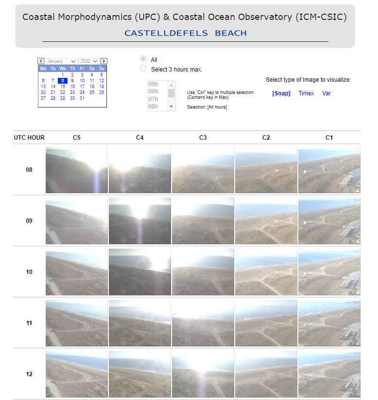
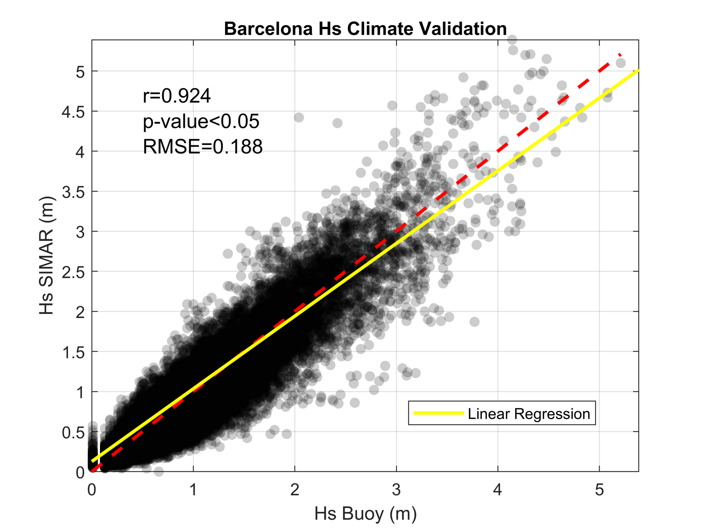
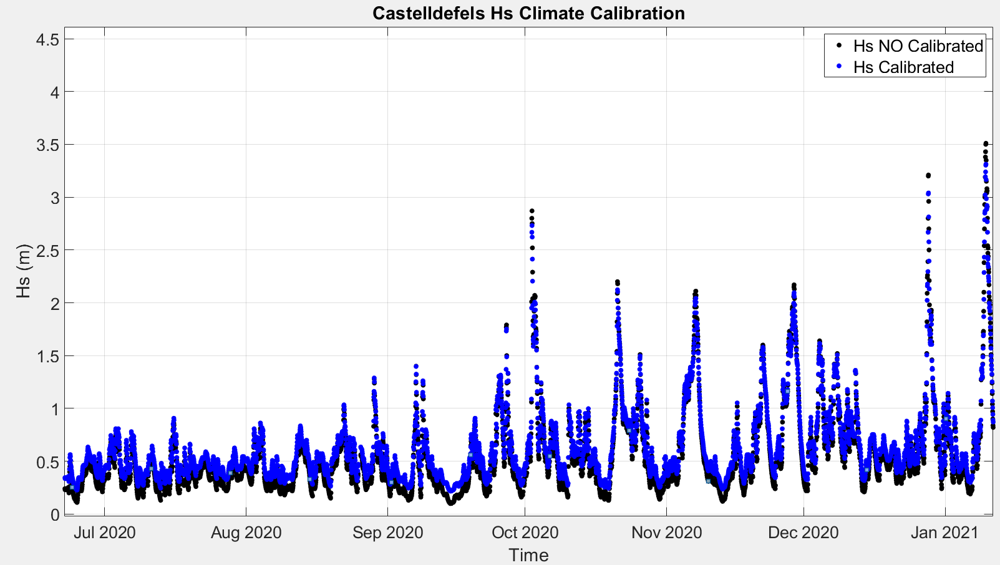
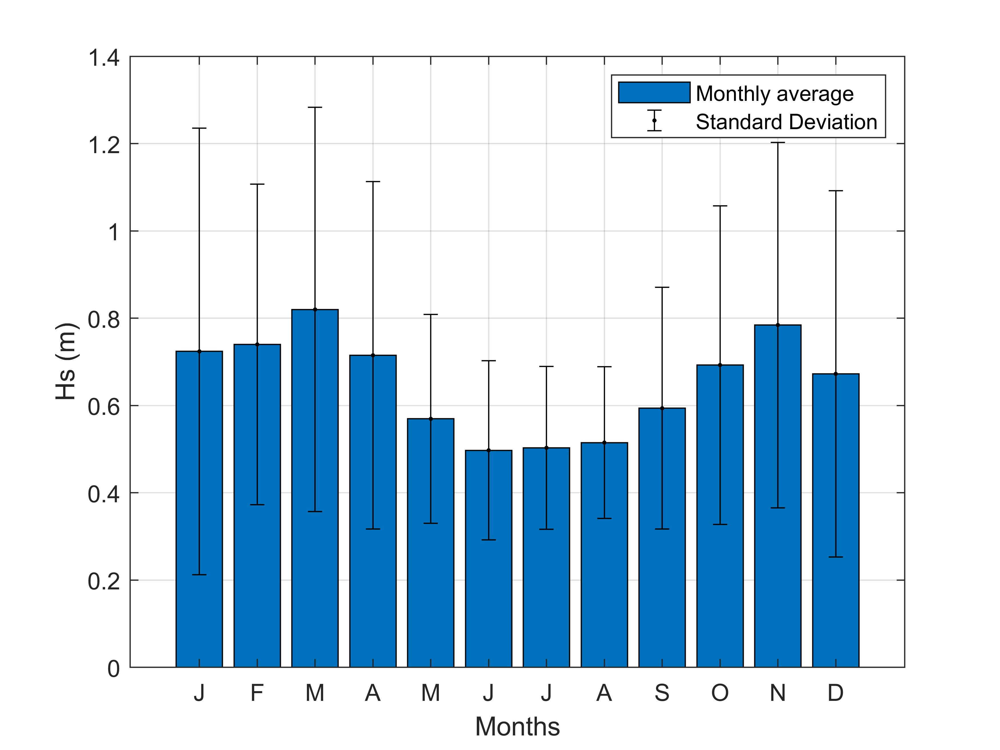
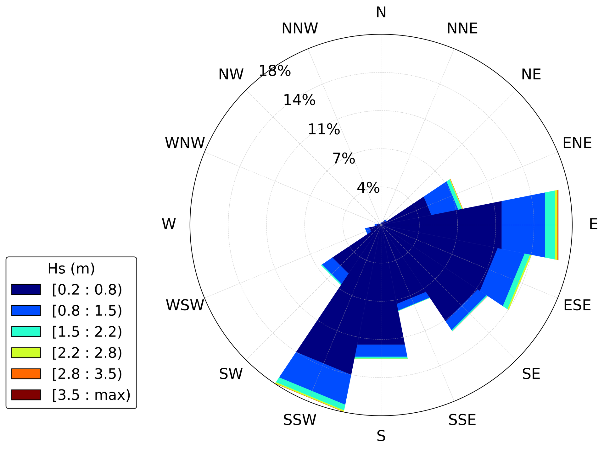
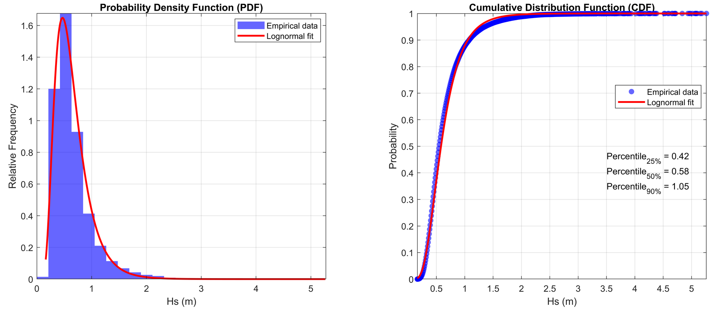

INTRODUCTION
Objectives of the project
Data description
METHODOLOGY
Approaches considered
CNN model specifications
RESULTS
Main results achieved

CONCLUSIONS
Conclusions of the project
This is the final project of "Introduction to Data Science and Machine Learning" postgraduate degree by Universitat de Barcelona (2021-2022 course).
Objectives of the project
Data description
Approaches considered
CNN model specifications
Main results achieved
Conclusions of the project
The main objective
of this project is to develop a Convolutional Neural Network model that classifies sea wave images into different categories according to their energy (by using the significant wave height, Hs, as a proxy of the wave energy).
This classification
problem has been tackled in two ways:
The wave images dataset is from the Video Monitoring System of Castelldefels beach. The video-monitoring station is deployed at 32 m high in Castelldefels (Barcelona) about 20 km southwards of the Barcelona city. Images are taken hourly since April 2010 until nowadays.
This monitoring system is managed by Coastal Morphodynamics (UPC) and Coastal Ocean Observatory (ICM-CSIC) and its main purpose is to study the morphodynamics of the beach.
Video-monitoring station
Website screenshot
The time span of the images downloaded for the study is from November 2011 to May 2022 and does not have a homogeneous distribution.
Final image dataset of more than 13k images
Edited images (3 images of 250x250)
Original images (1280x960)
What is the wave height?
Wave height is the vertical distance between the crest (peak) and the trough of a wave.
In the long term, the waves can be parametrised by the significant wave height (Hs) which is a variable that resumes the behaviour of individual waves in each hour.
The Hs data comes from the SIMAR database which consists of time series of wind and wave parameters from numerical modelling.
They are therefore simulated data and are not derived from direct measurements of nature. The SIMAR database is publicly available in the website of Puertos del Estado.
Due to the fact that the source of the wave Hs database is from numerical modelling, a pre-process of validation
and calibration
with instrumental data is needed
.
The validation has been carried out by comparing data from the same SIMAR model at a location close to the buoy in the port of Barcelona (15 km separated approx.). These data have been fitted to a linear regression model.
This linear regression model was then used to calibrate the SIMAR model values in the study area.
Study area map
 STATISTICAL DESCRIPTION
 Hs wave rose
Monthly averages
Data preparation for the model
Train-validation-test split

Define the model
Synthetic Minority Oversampling Technique, SMOTE
Train the model
Check the evolution of the loss/accuracy over the epochs
Comparing train and validation results
Evaluate the test set with the trained model
MULTICLASS APPROACH
BINARY APPROACH
Test accuracy = 0.627
Test accuracy = 0.863
Full dataset accuracy = 0.639
Full dataset accuracy = 0.898
created with
Website Builder Software .